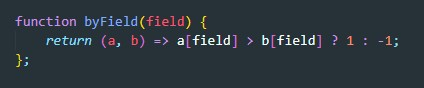
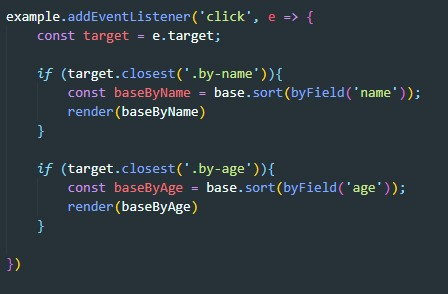

Стандартный метод массива sort принимает callBack функцию в которую он передает два сравниваемых элемента, если первый больше второго то возвращается 1 иначе возвращается -1. На этих данных произойдет сортировка. Т.е. функция CallBack сортировки по полю объекта будет выглядеть вот так:
Все что нам остается это создать новый массив который нам вернет метод sort, которому мы передали на вход функцию сортировки. После чего рендерим заново нашу страницу
